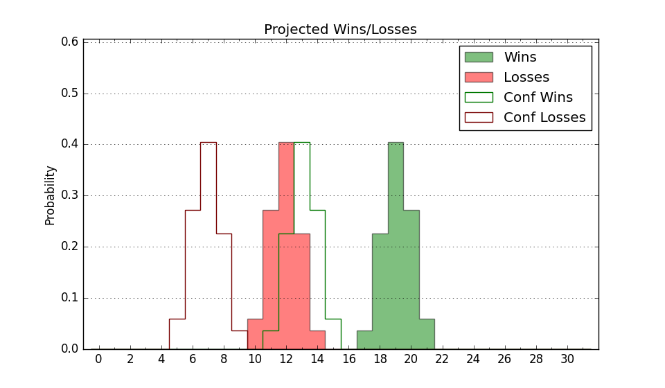

| Home | Game Probabilities | Conferences | Preseason Predictions | Odds Charts | NCAA Tournament |
| City: | Riverside, California | |
| Conference: | Big West (3rd)
| |
| Record: | 11-5 (Conf) 17-10 (Overall) | |
| Ratings: | Comp.: 0.9 (162nd) Net: 0.9 (162nd) Off: 103.6 (159th) Def: 102.6 (171st) SoR: 2.2 (106th) |
| Remaining | ||||||
|---|---|---|---|---|---|---|
| Date | Opponent | Win Prob | Pred. | |||
| 2/20 | @ Cal St. Northridge (309) | 68.8% | W 69-63 | |||
| 2/24 | @ Hawaii (131) | 29.0% | L 62-68 | |||
| 3/2 | UC Irvine (83) | 42.4% | L 70-73 | |||
| 3/4 | @ Cal Poly (310) | 68.9% | W 66-61 | |||
| Previous | Game Score | |||||
| Date | Opponent | Win Prob | Result | Off | Def | Net |
| 11/7 | @Colorado (62) | 13.2% | L 66-82 | -2.6 | 3.5 | 0.9 |
| 11/10 | @Loyola Marymount (99) | 21.7% | W 81-79 | 8.6 | 6.5 | 15.1 |
| 11/17 | @Creighton (12) | 5.1% | L 51-80 | -13.5 | -5.2 | -18.7 |
| 11/21 | (N) Weber St. (206) | 59.5% | W 72-65 | 9.2 | -0.6 | 8.6 |
| 11/22 | (N) Wright St. (197) | 57.2% | W 70-65 | -5.3 | 7.7 | 2.3 |
| 11/23 | (N) Abilene Christian (199) | 57.6% | W 76-65 | 3.0 | 10.7 | 13.7 |
| 11/30 | @California Baptist (174) | 37.3% | L 60-65 | -11.3 | 4.7 | -6.6 |
| 12/11 | @Idaho (287) | 62.2% | W 76-74 | 4.4 | -10.6 | -6.3 |
| 12/14 | @Oregon (40) | 9.8% | L 65-71 | -1.0 | 10.5 | 9.5 |
| 12/20 | San Diego (194) | 70.9% | L 84-92 | -6.0 | -21.3 | -27.4 |
| 12/22 | Portland (133) | 59.0% | W 76-65 | -1.0 | 7.5 | 6.4 |
| 12/29 | Cal St. Bakersfield (291) | 85.3% | W 71-59 | 1.5 | 3.9 | 5.4 |
| 12/31 | @Long Beach St. (171) | 36.6% | W 73-72 | 1.3 | 10.4 | 11.7 |
| 1/5 | Cal St. Fullerton (125) | 56.9% | L 62-77 | -13.3 | -22.2 | -35.5 |
| 1/7 | Cal St. Northridge (309) | 88.3% | W 68-45 | -8.5 | 24.2 | 15.8 |
| 1/11 | @UC San Diego (268) | 59.5% | W 74-68 | 4.5 | -0.9 | 3.6 |
| 1/14 | @UC Santa Barbara (100) | 22.0% | W 65-64 | 3.0 | 14.0 | 17.0 |
| 1/16 | Cal Poly (310) | 88.3% | W 83-78 | 13.1 | -26.9 | -13.8 |
| 1/19 | @UC Davis (140) | 32.1% | W 74-72 | 9.2 | 2.7 | 11.9 |
| 1/21 | Hawaii (131) | 58.2% | L 63-67 | -20.3 | -0.2 | -20.4 |
| 1/28 | UC San Diego (268) | 83.3% | W 72-65 | 0.0 | -4.4 | -4.4 |
| 2/2 | @Cal St. Bakersfield (291) | 63.0% | L 76-82 | 5.2 | -22.6 | -17.4 |
| 2/4 | @Cal St. Fullerton (125) | 27.9% | L 58-64 | -6.7 | 10.0 | 3.3 |
| 2/9 | UC Davis (140) | 61.7% | W 72-65 | 0.5 | 7.2 | 7.8 |
| 2/11 | @UC Irvine (83) | 17.7% | L 64-83 | -0.2 | -11.5 | -11.7 |
| 2/15 | Long Beach St. (171) | 66.3% | W 88-76 | 12.7 | 0.3 | 13.0 |
| 2/18 | UC Santa Barbara (100) | 48.9% | W 74-63 | 18.9 | -0.1 | 18.8 |
| Stats & Trends | |||||
|---|---|---|---|---|---|
| Current | Day | Week | Month | Season | |
| Composite | 0.9 | +0.0 | +1.2 | -0.2 | -0.4 |
| Comp Rank | 162 | +1 | +15 | -6 | -18 |
| Net Efficiency | 0.9 | +0.0 | +1.2 | -0.2 | -- |
| Net Rank | 162 | +1 | +14 | -3 | -- |
| Off Efficiency | 103.6 | +0.0 | +1.1 | +0.4 | -- |
| Off Rank | 159 | -- | +18 | -16 | -- |
| Def Efficiency | 102.6 | +0.0 | +0.2 | -0.5 | -- |
| Def Rank | 171 | +1 | +7 | +16 | -- |
| SoS Rank | 130 | -- | -3 | +16 | -- |
| Exp. Wins | 19.1 | -0.0 | +1.1 | -0.3 | +2.6 |
| Exp. Conf Wins | 13.1 | -0.0 | +1.1 | -0.3 | +1.7 |
| Conf Champ Prob | 2.3 | -0.2 | +1.5 | -10.9 | -10.3 |

| Advanced Stats | ||
|---|---|---|
| Stat | Value | Rank |
| Off Eff FG % | 0.501 | 189 |
| Off Ast Ratio | 0.145 | 147 |
| Off ORB% | 0.319 | 59 |
| Off TO Rate | 0.152 | 141 |
| Off FT Ratio | 0.260 | 326 |
| Def Eff FG % | 0.513 | 203 |
| Def Ast Ratio | 0.134 | 109 |
| Def ORB% | 0.194 | 2 |
| Def TO Rate | 0.147 | 240 |
| Def FT Ratio | 0.372 | 302 |